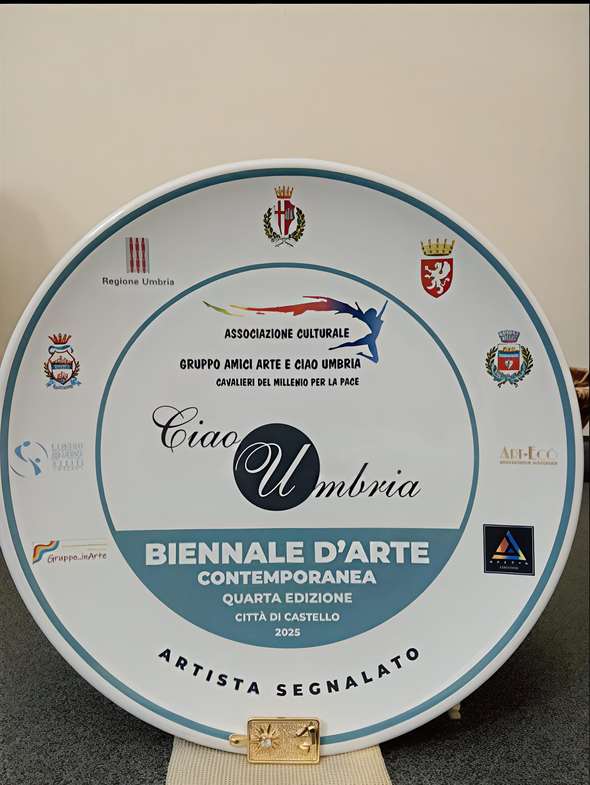
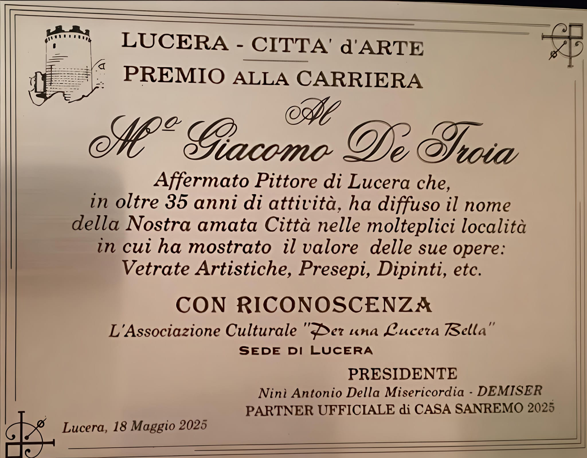
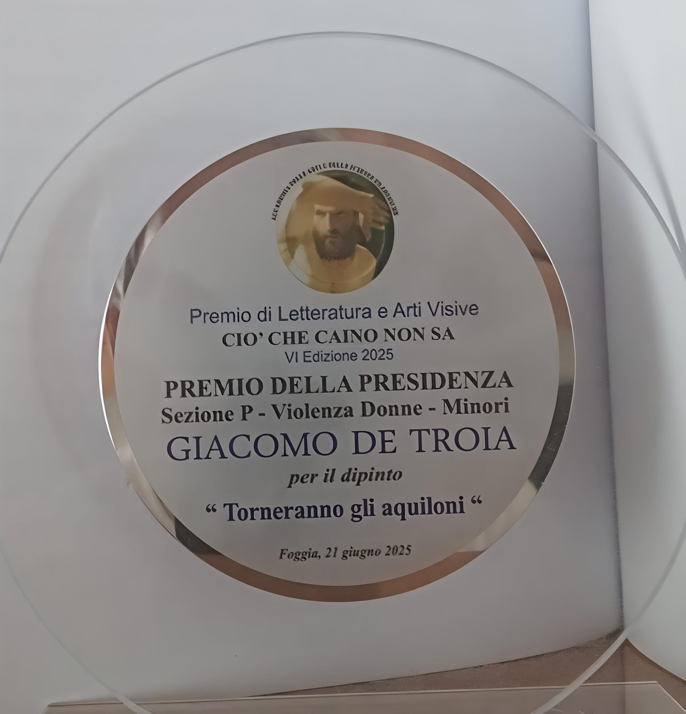
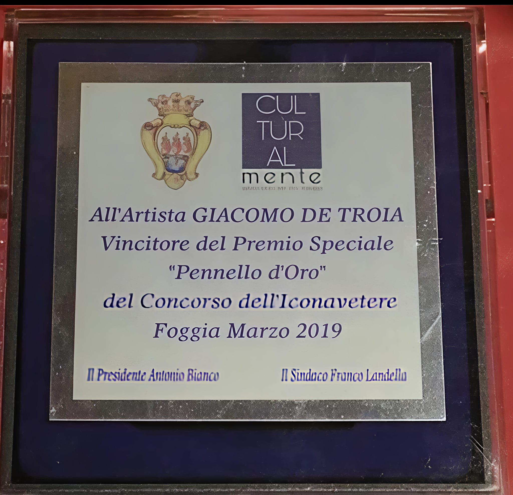
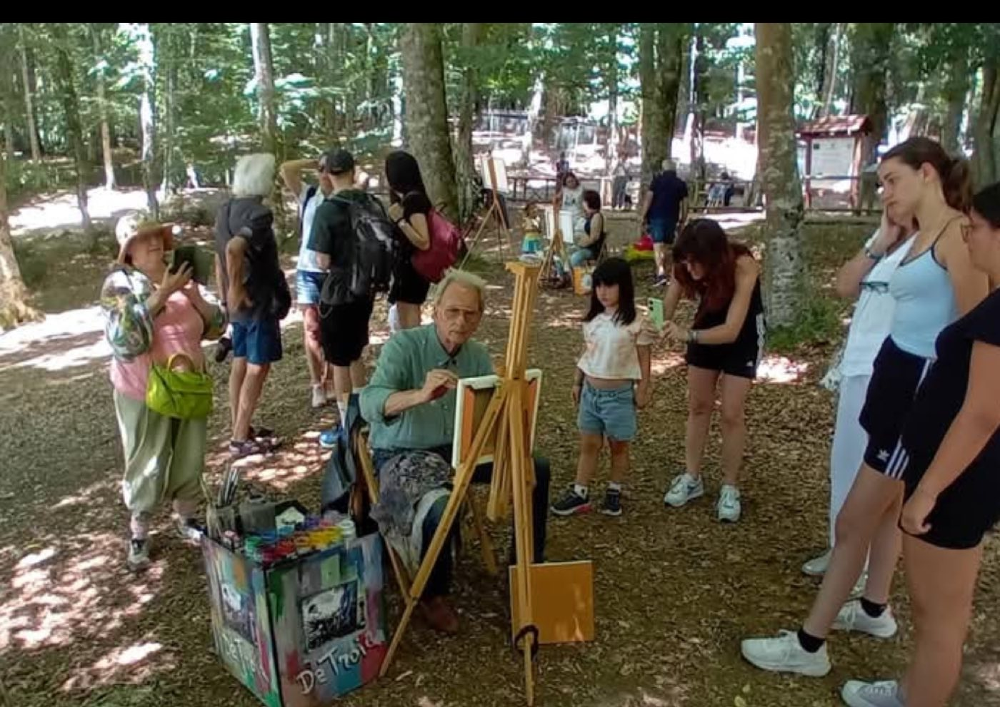
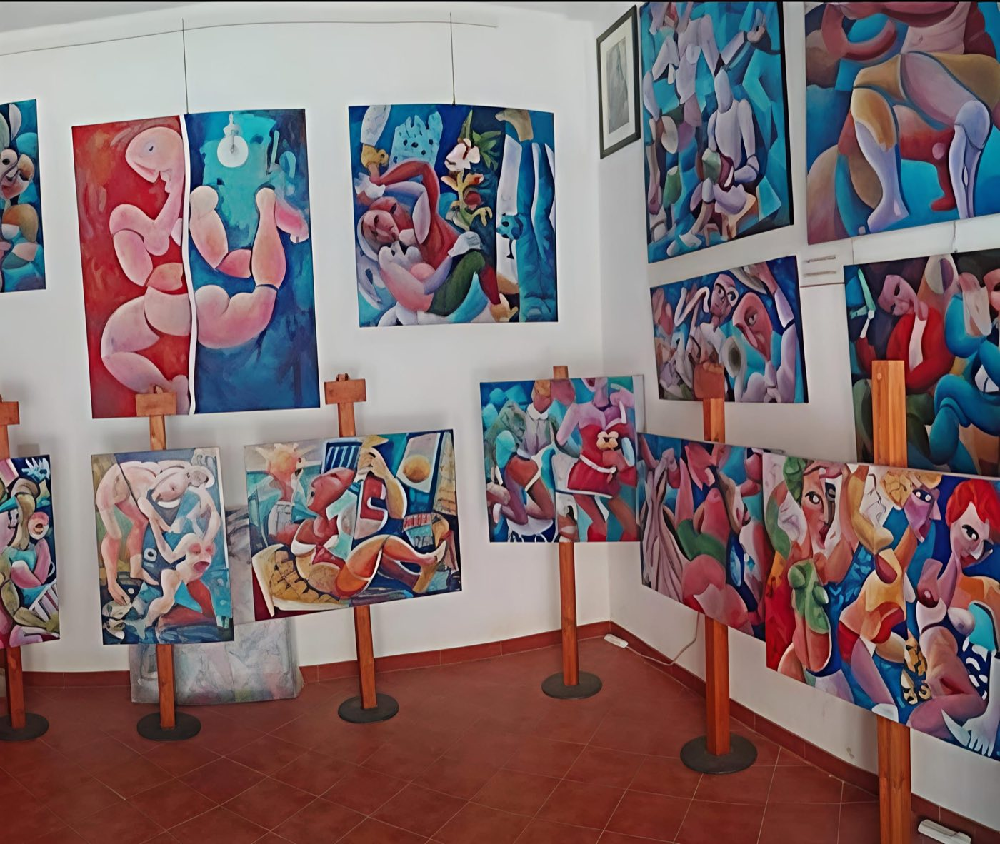
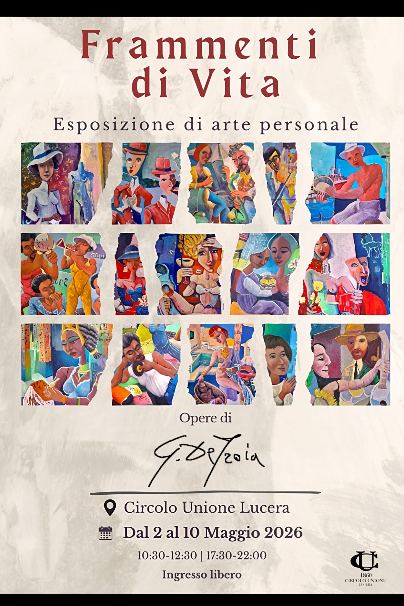

Giacomo De Troia
Mostre e Premi
Esposizioni e Riconoscimenti
Riconoscimenti
Premi e Riconoscimenti
Artista Segnalato
Biennale d'Arte Contemporanea “CIAO Umbria” — IV Edizione, Città di Castello

Premio alla Carriera “Lucera Città d'Arte”
Associazione Culturale “Per una Lucera Bella” — partner ufficiale Casa Sanremo 2025
Lucera, 18 Maggio 2025

Premio della Presidenza
Premio di Letteratura e Arti Visive “Ciò Che Caino Non Sa” — VI Edizione, Sezione P Violenza Donne e Minori
Opera: Torneranno gli aquiloni — Foggia, 21 giugno 2025

1° Classificato
Premio Nazionale “Ciò Che Caino Non Sa” — V Edizione, Violenza Donne e Minori
Opera: Vittime Invisibili — Foggia
Premio Speciale “Pennello d'Oro”
Concorso dell'Iconavetere — CULTURALMENTE
Foggia, Marzo 2019

2° Classificato
Concorso V. Piccirillo — Monticchio
Esposizioni
Mostre

Museo Archeologico Nazionale di Eboli
Opera esposta: L’Angelo di Luce

Chiostro S. Antonio, Villa Comunale — Bovino
Una selezione di opere che esplorano la drammaticità e la bellezza dell’esperienza umana, esposte nel suggestivo chiostro storico di Bovino.
Cronologia Espositiva
Dubai — Gallery of Light
Esposizione personale internazionale — Emirati Arabi Uniti
Sassari — “Arte e Kaos Masquerade”
Rassegna d'arte contemporanea
Bari — Galleria d'Arte “Gaglianoarte”
Esposizione personale — replicata anche nel 2017
Foggia — Sala Propilei, Palazzetto dell'Arte
Personale “Il Teatro della Vita”
Teatro Garibaldi — Lucera
Collaborazione con l'Associazione Teatrale “La Falce di Luna” per l'atto unico Annuncio Ritardo, in occasione del quale viene esposto il dipinto Agli Operai di Petrarsa (96×96 cm, 2014, collezione privata) — 23 aprile 2014
Martina Franca (TA) — Palazzo Ducale
Esposizione personale
Termoli (CB) — Castello Svevo
Esposizione personale
Pisa — Centro Arte Moderna
Esposizione personale
Parigi — Galleria dell'Europa
Esposizione personale internazionale
Barletta — Fondazione Giuseppe De Nittis
Esposizione personale
Saronno (VA) — Galleria d'Arte “La Bancarella”
Quattro personali consecutive negli anni 2002, 2007, 2010, 2012
EXPO ARTE NEW YORK
Partecipazione con il Gruppo Galleristi Associati di Ancona — pubblicazione sulla rivista ART LEADER
Galleria Artecultura — Milano-Brera
Collettiva — opere quotate e pubblicate sulla rivista Artecultura diretta dal Dott. Giuseppe Martucci — novembre 2004
Sala Azzurra — Milano
Personale “Pittura sul Teatro della Vita” — 4-26 novembre 2004 — testo critico del Dott. Teodosio Martucci
Galleria Modigliani — Milano
Esposizione personale
Palazzetto dell'Arte — Foggia
Esposizione personale
Villa Prati di Bertinoro (FO)
Esposizione personale per un mese intero — ottobre 1999
“Martedì dell'Arte” — Gabicce Monte (PS)
Rassegna estiva di pittura, da giugno a settembre — precedute dalla partecipazione al Castello di Montegridolfo
Studio del M° Guerrino Bardeggia — Gabicce Monte
Ingresso nel gruppo “Arte per la Vita” fondato dal Maestro Riboni — febbraio 1999
Pinacoteca Villasoranzo — Varallo Pombia (NO)
Personale di pittura, acrilico e olio su tela
Museo Civico di Lucera
Personale “Quadri ad olio su tela” — nello stesso anno apre il laboratorio artistico “Arte Studio 95”
Circolo “Strozzi” — Lucera
Prima esposizione personale — opere di grafica
Catalogo Completo
Altre Mostre Personali
Immagini
Dai Luoghi dell'Arte





Le Opere
Scopri le Opere Premiate
Esplora il catalogo completo delle opere di Giacomo De Troia, incluse quelle che hanno ricevuto riconoscimenti nazionali e internazionali.
Sfoglia le Opere →G. De Troia